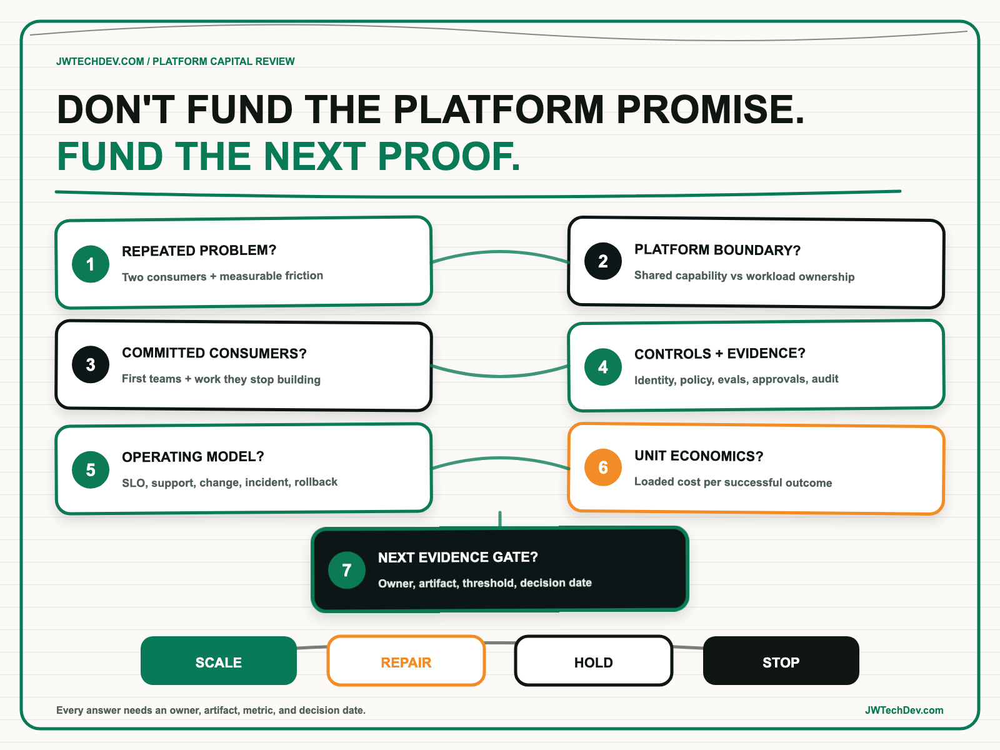

Seven questions before funding an enterprise AI platform.
An AI platform should be funded as a product that creates reusable capability for multiple teams, not as a large technical promise wrapped around one successful prototype. Before approving serious capital, test the demand, architecture, controls, operating model, economics, and evidence required for the next funding decision.

Quick answer
Before funding an enterprise AI platform, ask seven questions: What repeated problem does it solve? Which capabilities truly belong in the platform? Who will adopt it first? What controls and evidence are mandatory? How will it operate and fail? What are the unit economics? What proof unlocks the next investment?
I call this the Platform Capital Gate. Each answer must point to an owner, an artifact, a metric, and a decision date. The outcome is not simply approve or reject. Leaders should be able to scale, repair, hold, or stop based on evidence.
First decide whether this is actually a platform
A platform is a shared product that reduces the work required for other teams to deliver outcomes. A model endpoint, prompt library, or central AI team does not automatically qualify. The investment case becomes credible when multiple consumers need the same governed capabilities: approved model access, identity, gateways, retrieval patterns, evaluations, observability, cost attribution, deployment paths, and reusable interfaces.
AWS guidance for enterprise-ready generative AI platforms emphasizes secure self-service, reusable patterns, standardized tooling, model governance, evaluation, operational controls, and measurable business value. That is a broader obligation than shipping one use case. It means the platform team must manage consumer experience, reliability, security, economics, and lifecycle change as a product.
The wrong move is to fund every possible capability before demand is proven. The better move is to identify repeated friction across real product teams, create the smallest shared foundation that removes it, and expand only when adoption and evidence justify the next layer.
The seven questions
1. What repeated business and engineering problem does the platform solve? Name at least two credible consuming workflows and the duplicated work they face today. Connect the proposed capability to cycle time, risk, quality, revenue, cost, or customer experience. If the case rests on “everyone needs AI,” the problem is not defined.
2. Which capabilities belong in the platform, and which stay with workloads? Centralize only what benefits from consistency or shared economics. The platform may own approved model access, identity patterns, policy enforcement, evaluation services, telemetry, and deployment templates. Workload teams should usually retain domain logic, user experience, outcome ownership, and context-specific risk decisions. Draw the boundary before selecting services.
3. Who are the first consumers, and what will they stop building? A platform with no committed consumers is infrastructure inventory. Name the first teams, their current path, onboarding work, migration incentive, and support needs. Track time to first successful use, active workloads, retained adoption, and the percentage of delivery work removed by the platform.
4. What controls and evidence are required before a workload can use it? Define data classes, identity, allowed models, tool permissions, human approval, evaluation thresholds, audit evidence, exception handling, and retirement. NIST's AI RMF calls for clear accountability, inventories, ongoing monitoring, and controls for third-party risk. Controls should be delivered through paved paths where possible, not left as policy documents every team must interpret independently.
5. How will the platform operate, degrade, and recover? Ask who owns service objectives, model or provider changes, incidents, capacity, support, rollback, and communication. AWS's Generative AI Lifecycle Operational Excellence guidance treats production as an ongoing value and improvement lifecycle because performance, data, user expectations, and cost can change. Fund operations with the build.
6. What are the unit economics and allocation model? Measure more than monthly cloud spend. Track cost per successful task, evaluation, active workload, user, tool call, or business transaction. Include model inference, orchestration loops, retrieval, storage, observability, security, support, and platform labor. AWS Cloud Financial Management guidance recommends cost allocation, forecasting, monitoring, optimization, and unit metrics so consumption can be tied to accountable teams and outcomes.
7. What evidence unlocks the next tranche of funding? Define the proof required to move from discovery to foundation, from foundation to production, and from production to scale. AWS guidance frames a proof of concept as a way to validate business value, data readiness, technical feasibility, and risk mitigation. A review should end with a formal decision, not an automatic continuation.
Fund the platform in evidence tranches
Tranche 1: demand. Confirm repeated problems, committed consumers, ownership, and a measurable baseline. The artifact is a consumer-backed platform thesis.
Tranche 2: foundation. Build the smallest reusable path that proves identity, model access, policy, evaluation, telemetry, deployment, and cost visibility for one representative workload. The artifact is a working paved path with evidence.
Tranche 3: production. Prove reliability, support, controls, adoption, and economics with real users. The artifact is an operated platform service, not a technical demo.
Tranche 4: scale. Add capability only when multiple teams are reusing the foundation and the unit economics improve or remain acceptable. The artifact is repeatable adoption across workflows, business units, or markets.
This approach makes architecture governance useful. Reviewers are not approving a permanent future state. They are deciding whether the current evidence supports the next bounded investment.
What to do next Monday
- Gather the sponsor, platform lead, two consumer teams, security, operations, and finance.
- Answer the seven questions in one page. Attach an owner, artifact, metric, and decision date to each answer.
- Circle every capability supported by only one use case. Move it back to that workload unless shared value is defensible.
- Choose one unit metric. Start with cost per successful task or per active production workload.
- Define the next evidence tranche. State the maximum spend, time box, proof required, and stop condition.
- Book the capital review now. Require a scale, repair, hold, or stop decision.
A platform deserves more funding when it makes teams faster, safer, and more economical in ways they can actually reuse.
I will be at AFROTECH in Houston November 2-6. If you are building an enterprise AI platform, global delivery organization, or technical go-to-market motion, I would be glad to compare notes.
Sources checked
- AWS Prescriptive Guidance: building an enterprise-ready generative AI platform
- AWS Prescriptive Guidance: architecting a successful generative AI proof of concept
- AWS Prescriptive Guidance: advancing a generative AI proof of concept
- AWS Prescriptive Guidance: delivering and sustaining generative AI value
- AWS Well-Architected Agentic AI Lens: cost optimization
- AWS Cloud Adoption Framework: cloud financial management
- NIST AI Risk Management Framework Core
Fund the next proof, not the entire promise
Explore more practical frameworks for enterprise AI, cloud architecture, governance, and technical leadership.
Get the free starter kit